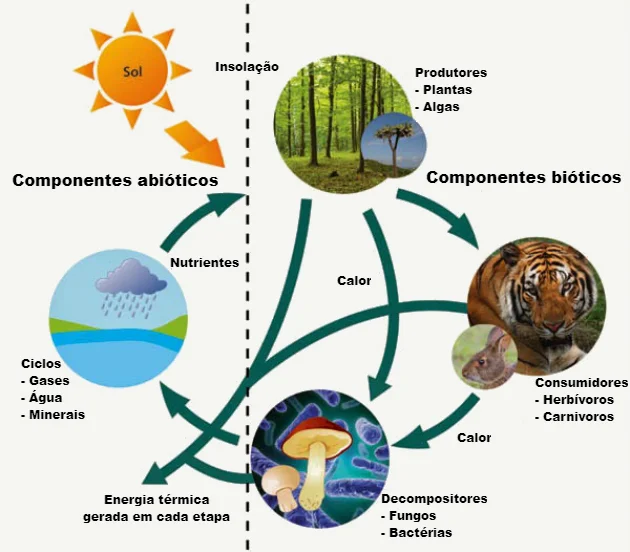

O QUE É ECOSSISTEMA
ECOSSISTEMA é o termo utilizado para definir um grupo de seres que habitam em um determinado local, as relações entre eles, e a interação destas comunidades com o ambiente em que vivem.
COMPONENTES DO ECOSSISTEMA
Algumas das características presentes nos seres vivos são acapacidade de reprodução, de evolução, presença de metabolismo, resposta a estímulos, presença de célula e material genético.
EXEMPLOS DE ECOSSISTEMAS
Os ecossistemas são sistemas naturais compostos por organismos vivos e seu ambiente físico, nos quais interações complexas ocorrem entre os seres vivos e os fatores abióticos. Eles podem ser encontrados em diversas escalas, desde o nível global, como a biosfera, até escalas locais, como pequenos aquários autossuficientes ou até mesmo uma única planta em uma floresta. A biosfera é o maior ecossistema existente, englobando todos os locais do planeta onde existe vida. As florestas tropicais são exemplos notáveis de ecossistemas de grande biodiversidade. Por outro lado, ecossistemas em pequena escala podem ser observados em ambientes como aquários, nos quais plantas, peixes e algas interagem em um sistema fechado. É crucial compreender que todos os ecossistemas estão interconectados, independentemente de seu tamanho, e que há uma constante troca de matéria e energia entre eles. Assim, cada ecossistema, por menor que seja, desempenha um papel importante na manutenção do equilíbrio do planeta.
MATERIAL PARA ESTUDO
Mapa Mental e Vídeo Aula com Nossa Eologia